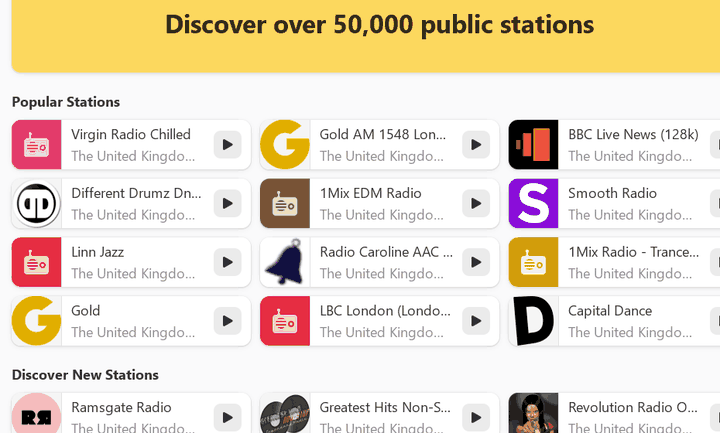
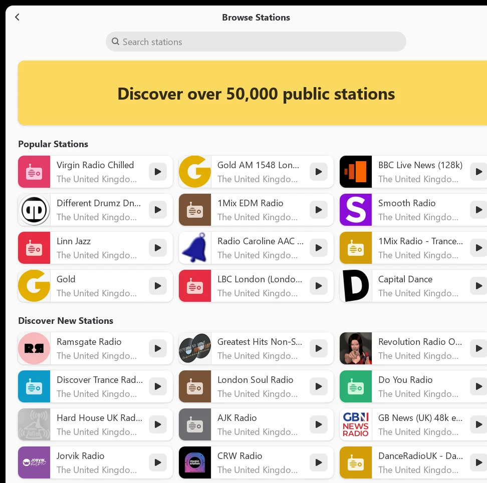
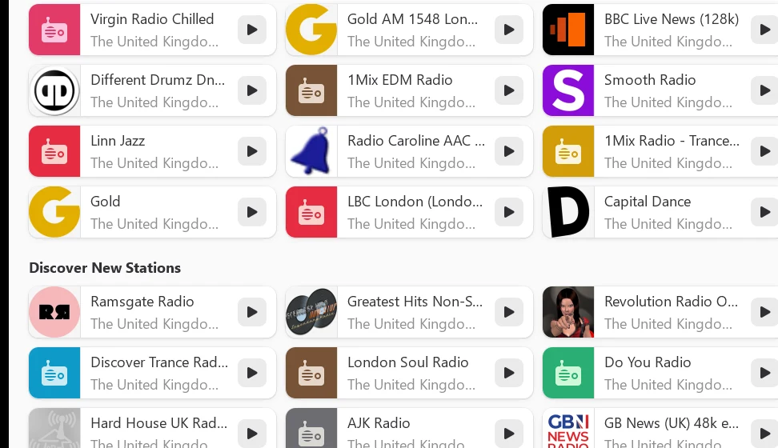
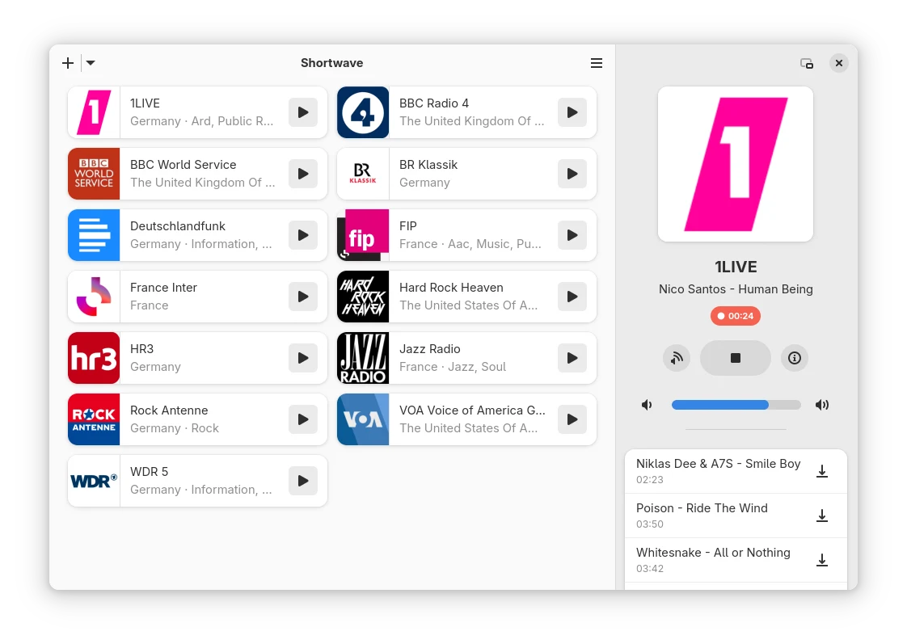
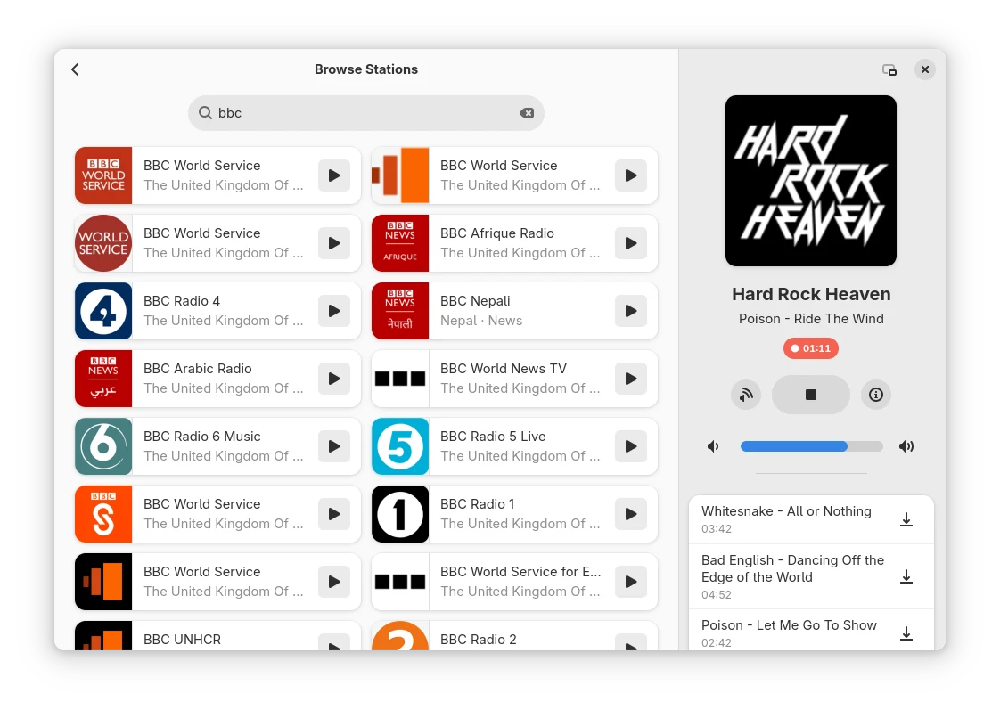
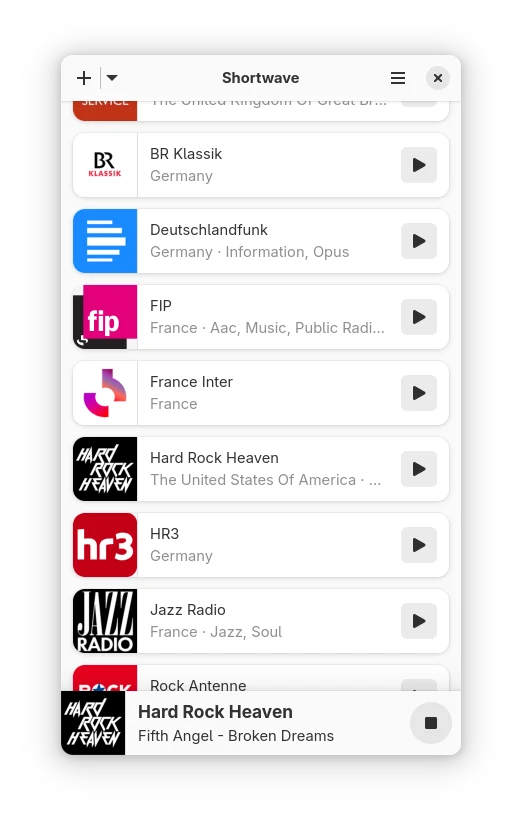
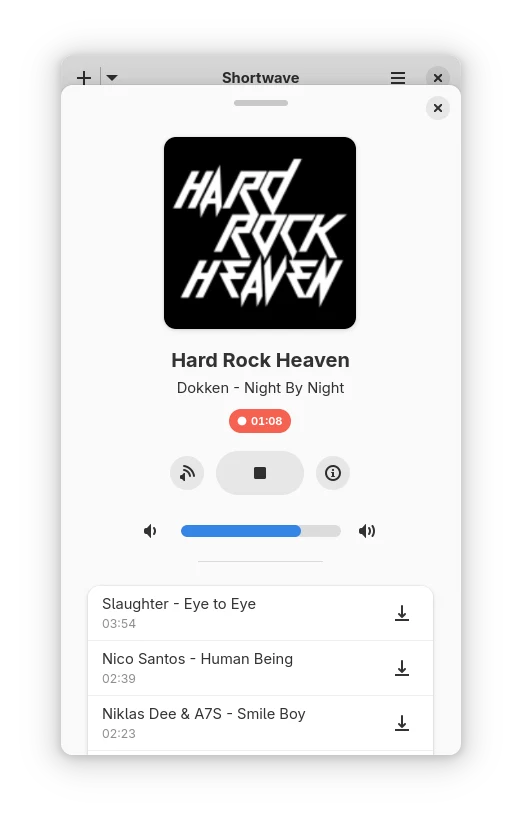
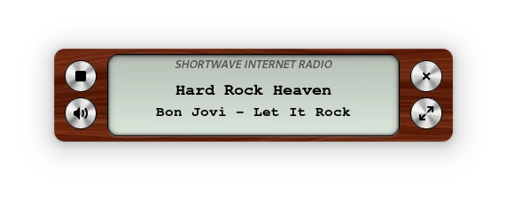

See it running on Windows
A real recording of the Windows build: the Browse page with popular stations and new ones to discover.

Everything you need to listen. Nothing you don't.
These are Shortwave's own features, made by the GNOME Shortwave team. The Windows port packages them; it doesn't change them.
Over 50,000 stations
Browse popular stations, discover new ones, or search the whole community database from radio-browser.info.
Your own library
Add your favourite stations to a personal library so they're one click away. The last station you played is ready when you reopen the app.
Track recognition
Shortwave picks up the song title from the stream and keeps a list of what you've heard. Titles can be selected and copied.
Save the tracks you like
Choose a recording mode: save every track, decide for each track, or record nothing. Pick the folder and the minimum and maximum length (up to 3 hours).
Simple, focused player
A player sidebar with cover art, track history and an easy volume slider, plus a compact mini player that looks like a classic wooden radio.
Adaptive layout
Built with GTK 4 and Libadwaita, the window adapts from a full desktop layout down to a small, narrow window.
Keyboard shortcuts
Ctrl+F to search, Ctrl+P to play or stop, Ctrl+↑/↓ for volume, Ctrl+, for preferences.
Station details
See a station's language, country, tags, codec, bitrate and stream address before you tune in.
Free and open source
No account, no ads, no subscription. Shortwave is GPL-3.0 software written in Rust, and so is this port.
Screenshots
Windows screenshots are from this port. The others are the official Shortwave screenshots from GNOME (taken on Linux); the app looks the same on Windows.














Packaged properly for Windows
Shortwave's code already supports Windows. This port builds it with MSYS2 (UCRT64) and wraps it in a normal Windows installer, with no changes to the app's code.
- Self-contained: GTK 4, Libadwaita and GStreamer are all included. Nothing else to install.
- Normal installer: Start menu shortcut, optional desktop shortcut, and a clean uninstall from Windows Settings.
- Tested streams: MP3, AAC, FLAC, Ogg Vorbis, HLS and more were played through the app before release. Recording was tested too.
- Lean: only the 23 GStreamer plugins Shortwave needs, instead of all 249.
- Open build: the packaging scripts and a step-by-step guide are in the repo, so anyone can rebuild it.
The mini player, part of Shortwave's original design.
Get Shortwave for Windows
Free to download and use. No account, no ads.
🪟 Windows installer (64-bit)
Shortwave 5.1.0 · about 34 MB · installs in a few clicks
Download for WindowsSHA-256 (5.1.0): 142529d3ec3cdfa1b7289a1c37defb810919fda9811602bdbe247af99fb345ee
🛡 SmartScreen warning? The installer isn't code-signed, so Windows may say it "protected your PC". Click More info → Run anyway. You can check the download against the SHA-256 above.
⏳ First launch can take a few seconds while the station list loads.
Build it yourself
The build and packaging guide explains how to compile Shortwave with MSYS2 and make the installer.
Read the guideQuestions and answers
The short version: it's free, it's unofficial, and it's the real Shortwave.
Is it free?
Yes. Shortwave for Windows is completely free to download and use, with no ads, no account and no subscription. It's open-source software under the GPL-3.0 licence.
Is this the official Shortwave?
No. This is an unofficial Windows port, built and packaged by Del (postmanpat). It isn't made, endorsed or supported by the Shortwave team or the GNOME project. The app itself is Shortwave, built from the upstream source code without changes.
Please report Windows-specific problems on this port's GitHub issues, not to the Shortwave team.
Is it safe? Why does Windows show a SmartScreen warning?
The installer is built from the public source code, using the scripts in this repo. It isn't code-signed (a signing certificate costs money every year), so Windows SmartScreen may warn you the first time. Click More info → Run anyway to continue.
To be sure your download hasn't been changed, compare its SHA-256 with the one on this page and in the release notes. In PowerShell: Get-FileHash .\shortwave-5.1.0-win64-setup.exe.
Where do the stations come from?
From radio-browser.info, a free community database of internet radio stations that anyone can contribute to. Shortwave doesn't host any streams itself; it plays them straight from each station.
Which versions of Windows does it run on?
64-bit Windows. There's no 32-bit or ARM build at the moment.
A station won't play. What can I do?
Some stations go offline or change their stream address. Try another station first. If a particular format never plays, please open an issue with the station name, so the missing codec can be added to the build.
Why is it called Shortwave?
Shortwave radio signals travel very far and can be received almost anywhere in the world, just like internet radio. The Shortwave team explains the name in this blog post.
What's the licence? Where's the source code?
Shortwave is licensed under the GNU General Public License v3.0 or later, and so is this port. The full source, including the Windows packaging scripts, is on GitHub, with the licence text in COPYING.md. The original project lives on GNOME GitLab.
Credits
All the credit for Shortwave goes to the people who make it.
Shortwave by Felix Häcker and contributors
Shortwave was created and is maintained by Felix Häcker, with development by Maximiliano Sandoval and Elias Projahn, design by Tobias Bernard, translations by the GNOME Translation Project, and code from many other contributors. It's part of GNOME Circle.
The Windows port (build and packaging only) is by Del (postmanpat). Stations come from the radio-browser.info community.
This is an unofficial Windows port. It is not affiliated with, endorsed by or supported by the Shortwave project or the GNOME Foundation. GNOME is a trademark of the GNOME Foundation. Shortwave is © Felix Häcker and contributors, licensed under the GPL-3.0-or-later. Station names and logos belong to their owners.